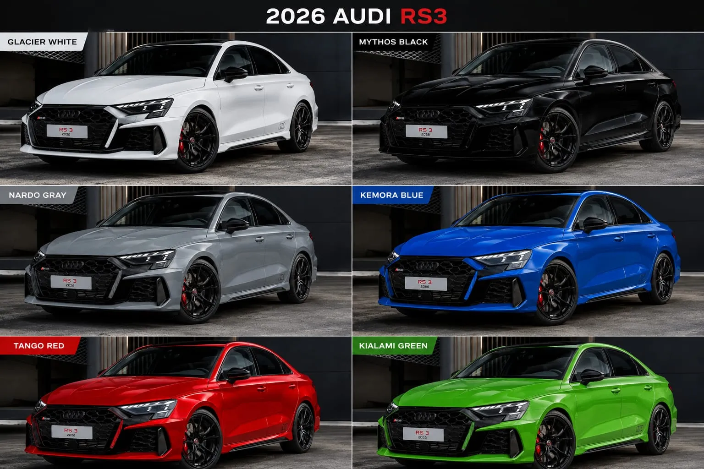

Audi RS3 Competition Limited 2026: 750 unidades para celebrar 50 años del cinco cilindros
Audi Sport presenta una edición limitada del RS3 con 400 CV, suspensión coilover ajustable, frenos de carbono-cerámica y producción restringida a 750 unidades para celebrar el motor cinco cilindros en línea.